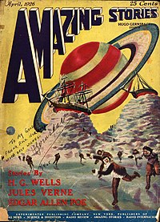

Hablemos de la ciencia ficcion
La ciencia ficción es un género relativamente nuevo, se discute mucho en cuando empezó a "nacer" este género, pero casi todos concuerdan que el estado puro de lo que es la ciencia ficción fue a inicios del siglo XX cuando el inventor y editor Hugo Gernsback publicó lo que seria la primera revista dedicada a la ciencia ficción, en su primer número define por primera vez como Scientifiction , dando paso al inicio del género.
Algunos autores como Isaac Asimov llaman al periodo de la ciencia ficción moderna como Proto ciencia ficción, que son literatura antigua que contenían elementos que se convertía en ciencia ficción, tales novelas como Frankenstein o el moderno Prometeo que hablaba de un “científico loco” del mismo nombre, que crea a partir de partes diferentes de cadáveres un monstro, en esta novela ya hablaba de temas como el uso de la tecnología para llevar a logros más allá del alcance del momento (revivir a un cadáver) y la rebelión hacia el creador (rebelión de las maquinas).
La ciencia ficción es un genero rico que puede ser maravilloso (o terrorífico) imaginarse lo que puede ser capaz la tecnología y como afectaría esto en la sociedad. Concluyendo recomiendo unos libros que pueden darle gusto al género, espero que sea de su agrado:
-
Fundacion (1951) de Isaac Asimov
-
Dune (1965) de Frank Herber
-
1984 (1949) de George Orwell
-
El problema de los tres cuerpos (2008) de Liu Cixin
-
Hyperion (1989) de Dan Simmons
-
Mundo Anillo (1970) de Larry Neven